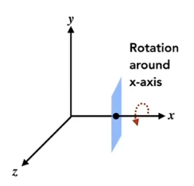

GAMES101课程笔记（一）——Transformation
本文基于闫老师的GAMES101课程，如果想要更好的阅读体验，建议搭配原课程一起食用。
写在本系列之前
笔者是一位刚刚入学的研究生，浑浑噩噩了一整个大四以后终于决定干点正事。由于自己对计算机图形学很感兴趣，将来也希望能从事游戏相关的行业，所以就慕名来学习GAMES101的课程，并开启此系列作为自己的学习记录，如果文中有任何不正确的地方，还请各位大佬指正。
本系列略去了很大一部分的基础数学知识，尤其是线性代数部分，如果在阅读本系列时发现公式部分难以理解，建议自行补充对应的数学知识。
引言
本文的主题是变换（Transformation），从简单的平移、旋转和缩放，到复杂的仿射变换和透视变换，变换为我们提供了控制和呈现图像的有力工具。
变换不仅仅是计算机图形学的核心，它还渗透到各种领域，如视频游戏、动画制作、虚拟现实、计算机辅助设计和医学成像等。
在图形学中，我们使用矩阵来表达变换，接下来的内容也据此展开。
2D Transformation
Linear Transforms——线性变换
在图像的变换中，如果变换前后的坐标满足如下关系：
我们就说这是一个线性变换，依据矩阵的知识，我们可以将上述变换写为矩阵形式：
其中矩阵就称为该变换的变换矩阵。
接下来我们先介绍几种基础的线性变换。
Scale——缩放变换
该变换中，图片仅在x轴和y轴上成比例缩放，如下图所示：
缩放变换的矩阵表达形式为：
Reflection——反射变换
在缩放变换的基础之上，如果我们将$s_x$（$s_y$同理）取为负值，则可以实现将图像翻转，例如如果我们做如下变换：
则变换的效果就会变成这样：
Shear——错切变换
错切变换比较抽象，在该变换中，我们需要先指定一个方向。
假如我们指定$x$轴方向，则所有点的坐标变换都满足这样的条件：仅有$x$方向上的坐标发生改变，改变后的值为其原始各方向坐标的线性组合。
这么解释非常抽象，我们从课程中的具体例子来进行解释：
在图示变换中，这个正方形在x轴方向上进行了错切变换。不难发现，变换前后所有的点，其$y$轴坐标都没有发生变化，因此我们只需关注$x$轴的坐标，依据错切变换的定义，它应满足
原始正方形的左上角顶点坐标为$(0,1)$，变换后其坐标为$(a,1)$；右上角顶点的原始坐标为$(1,1)$，变换后为$(a+1,1)$。
代入上述方程，解得$m=1,n=a$
从而得到该变换的变换矩阵为：
Rotation——旋转变换
注意，我们这里说的旋转变换是指图像绕原点进行旋转，将图像沿逆时针旋转$\theta$的变换如下所示：
不难推导出该变换的变换矩阵为：
（使用高中数学知识就可以进行推导，此处不再赘述）
Homogeneous Coordinates——齐次坐标
什么是齐次坐标
我们思考这样一个问题：我们如何用矩阵表示平面上的平移变换？就像下图中的这种情况：
我们可以很简单地写出这样一个形式：
我们发现，这个矩阵并没法写作线性变换的形式，所以平移不是线性变换。
但作为一个简单且常用的变换，我们希望平移也能和线性变换的矩阵形式统一，于是我们在二维坐标上额外加上一维$w$，变为齐次坐标，形式为$(x,y,w)$。
其中$w$的取值决定了该坐标表示的是一个点还是一个向量，也就是说：
这也导致在齐次坐标下，点的表示并不唯一，对于任何一个坐标$(x,y,w)(w\not=0)$，它代表的其实就是点$(x/w,y/w,1)$。
（这其实解决了欧式空间中，无穷远点无法表示的问题，以后有空再说8）
于是，上述的平移变换我们就可以写成：
这样，我们就可以将所有的线性变换，加上平移变换，统一地写为：
齐次坐标的运算
刚才提到过，齐次坐标通过第三维的数值来区分点和向量，这么设计使得原坐标下的运算仍然兼容，例如：
此外由于齐次坐标点的表达方式，还支持一种运算：
这种运算的本质是求两个相加点的中点，结合前文内容应该不难理解。
Inverse Transform——逆变换
逆变换，指的是将变换后的图像变回原图像的过程，如下图：
在矩阵形式下，假设原变换的变换矩阵为$M$，则其逆变换的变换矩阵为其逆矩阵$M^{-1}$。
值得一提的是，对于旋转变换矩阵：
由于$R_\theta$一个正交矩阵，所以有：
Composing Transforms——复合变换
很多时候，我们对图像的变换会涉及多个基础变换，考虑下图所示的变换：
这个变换的一种分解是先进行一个45°的旋转，再向右平移一个单位，即：
使用矩阵来表达上述过程，就是：
中间的两个矩阵刚好对应上述两步变换，应用顺序是从右往左。
这里之所以强调顺序，是因为如果我们交换两个步骤的顺序，也就是先平移再旋转，那产生的结果会完全不同：
这对应的矩阵特性就是矩阵乘法不具有交换律，具体到本例子，就是：
总结来说，假如我们现在有一系列变换$A_1,A_2,A_3,…$，那对应的矩阵表达就是：
另外，由我们的变换一般式：
不难看出，使用齐次坐标表达变换时，线性变换总是先于平移变换进行。
3D Transformation
三维的变换可以看做是二维变换的推广，其一般式也与二维变换的类似：
简单三维变换
三维下的缩放变换与平移变换仍比较简单，与二维的情况比较相似。
缩放变换的变换矩阵式为：
平移变换的变换矩阵为：
旋转变换
在三维情形下，旋转变换变为了绕特定轴进行，如下是绕$x$轴进行旋转变换的情况：

（本系列按右手定则来进行描述，即右手竖起大拇指握拳，拇指指向正方向，其余四指的方向为旋转正方向）
据此，我们可以分别写出绕三个轴进行旋转变换的变换矩阵：
其中$R_x(\alpha)$和$R_z(\alpha)$都包含有子矩阵$\begin{pmatrix}cos\alpha & -sin\alpha \ sin\alpha & cos\alpha\end{pmatrix}$，只有$R_y(\alpha)$是相反的旋转角。
以$z$轴举例（$x$轴同理），设$x$，$y$，$z$三个坐标轴上正方向的单位向量分别为$\boldsymbol{i}$，$\boldsymbol{j}$，$\boldsymbol{k}$，我们有：
也就是在右手定则下，绕$z$轴旋转的正方向会是先$x$后$y$，符合坐标顺序（也就是$xyz$顺序）。
反观$y$轴，由于：
顺序为先$z$后$x$，而在坐标顺序中，$x$排在$z$前面，顺序是相反的，所以这里加上负号。
（其实这么解释有点笼统，如果把变换矩阵和坐标乘出来看会比较好理解一点，但闫老师就是这么讲的。）
Euler angles——欧拉角
在三维空间中，旋转是一个非常复杂的问题，因为在平面中仅有两个方向（顺时针与逆时针），但在空间中旋转的方向可以是任意的。
不过刚才我们知道了，绕坐标轴旋转的变换矩阵是很容易得到的。因此我们可以思考：是否有办法将任意的旋转变换，用这三个基础的旋转来进行描述？
也就是按下述方式分解任意旋转：
答案是肯定的，这种方式就是所谓的欧拉角，旋转所绕轴为$Yaw$（偏航角），$Yaw$（俯仰角），$Roll$（滚动角）。
Rodrigues’ Rotation formula
罗德里格斯旋转公式（Rodrigues’ Rotation formula）描述了另外一种旋转变换，即“物体绕任意轴$\boldsymbol{n}$旋转角度$\boldsymbol{\alpha}$”的旋转变换。
在别的地方这种方式也可能被称为“轴角”，即通过一轴一角表示旋转，其具体表达式为：
其中$\boldsymbol{I}$为单位矩阵，该公式的证明以后有空单独开篇文章写（画饼），有兴趣的读者可以先自行查阅。
MVP Transformation
现在假想一个场景，就是你正在拍摄一张风景照，那么从三维场景变成相机中的一张照片，这个过程中都发生了些什么呢？
我们可以认为是进行了这样的三步：
- 找到一处漂亮的风景（model transformation）
- 找到相机的完美角度（view transformation）
- 按下快门（projection transformation）
以上三步就是计算机图形学中的MVP变换，接下来要重点讲解这些内容。
在开始之前先在这里写下一个重要的思想，MVP变换的本质是坐标系的转换。
Model Transformation——模型变换
模型变换效果是将局部坐标转换至世界坐标。
局部坐标系，有时也被叫做模型空间（Model Space），在游戏引擎或者建模软件中非常常见，一般每个模型都会有一个局部坐标系。
“头在脖子的上面”，这句话其实就是在用局部坐标系描述人的构成。
课程中没有提到这一部分，是因为在很多问题中，给出的信息都已经是在世界坐标系下的，但我认为学习计算机图形学，还是得写一下这部分的内容。
至于变换矩阵的部分，与视图变换的过程还是比较相似的，这里就不详细展开了。
View Transformation——视图变换
视图变换就是怎么放置相机的问题，其实质是将世界坐标转换至相机坐标。
相机的表达与相机坐标系
讨论怎么放置相机，就要先对相机进行定义，相机的定义需要三个信息：
位置$e$、朝向$\vec{g}$、上方向$\vec{t}$
（注意$\vec{t}$与$\vec{g}$都是单位向量，且相互垂直）
这样定义相机的同时，其实也建立起了一个相机坐标系。考虑下面的两种情况：
由于物体和相机的相对位置完全一致，相机拍摄出的照片也是完全一致的。
这时如果我们使用相机坐标系，就可以将两种情况统一到一起，就像下图所示：
在本系列中，我们规定$e$为相机坐标系原点，$\vec{t}$为$y$轴正方向，$\vec{g}$为$z$轴负方向。
世界坐标到相机坐标
那么现在问题在于，我们的物体坐标和相机的$e$，$\vec{g}$，$\vec{t}$信息，都是在空间坐标系下的表达，我们该如何将其转换为相机坐标系下的表达呢？
以上图为例，我们考虑如何将右上的坐标系变为左下的坐标系。
其实思路是很简单的，我们先将$e$移动到原点，然后依次将各坐标轴旋转到对应位置即可。
于是我们能将视图变换的变换矩阵$M_{view}$拆解为一个旋转矩阵和一个平移矩阵的乘积：
平移矩阵$T_{view}$是很容易写出来的，只需要利用$e$就可以得出：
旋转矩阵$R{view}$就比较复杂，现在我们的目标是将$\vec{g}$旋转到$z$轴负方向，$\vec{t}$旋转到$y$轴正方向，这其实是很难写的，但如果我们先求$R{view}^{-1}$，那么就会变得容易一点。
那$R_{view}^{-1}$的目标，就是将$z$轴负方向旋转到$\vec{g}$，$y$轴正方向旋转到$\vec{t}$，我们可以使用取特殊点的方式来进行求解。
假设$xyz$坐标系下有一点$(0,1,0)$，那在旋转后的坐标系下，其坐标应为$(x_t,y_t,z_t)$，也就是$\vec{t}$的三维
（这里就是先前将$\vec{t}$取为单位向量的好处）
那我们再设：
应该有：
不难得到$b=x_t$，$e=y_t$，$h=z_t$。
按照这一解法，我么最终可以得到：
最巧妙的一步就在这里，我们能够发现，$R_{view}^{-1}$是一个正交矩阵，所以我们得到：
至此，我们就得到了整个视图变换的变换矩阵。
Projection Transformation——投影变换
最后一步投影变换变换是进行“照相”，将三维变为二维，也就是相机坐标到屏幕坐标的转换。
常见的投影变换有两种，一种是透视投影，另一种是正交投影。
（相信学过美术和设计的同学一定不陌生）
Orthographic Projection——正交投影
正交投影是最简单的一种投影，它所做的就是直接将物体沿坐标轴投射到平面上。
最简单的做法，就是直接丢掉所有点的$z$坐标，再将其平移缩放至矩形$[-1 ， 1]^2$中。
（平移缩放的目的是为了方便后续的计算，也是一种约定俗成的做法）
不过在图形学中，我们通常采用的是另外一种方法。
首先我们提出一种表达空间长方体的新办法，那就是用$[l,r]×[b,t]×[f,n]$的形式，三个二元组分别表示该长方体在三个坐标轴上所占据的区间，如下图左：
（其实就是left，right，bottom，top，far和near的首字母）
然后我们考虑将该长方体变换到$[-1,1]^3$的标准立方体，图中已经很清楚地展示了这一过程，即先将其平移到原点，再进行缩放即可，该过程的变换矩阵非常容易写出，即：
Prespective Projection——透视投影
透视投影是一种更加符合人类视角的投影方式，拥有“近大远小”的特点。
在欧式几何中，有一条真理为“平行线永不相交”，但是在投影变换后，原先的两条平行线也会交于一点，就像下图中的两条铁轨
那么我们该如何来做这样的透视投影呢？
我们首先思考投影变换与正交变换的区别在哪里，在下图中

右边的长方体代表的是正交变换，而在投影变换中，我们是对一个截锥体进行操作。
在上一部分中，我们已经得到了正交变换的变换矩阵，那现在我们只需要将这个截锥体“挤压”成长方体，就可以直接沿用这一结论了。
接下来我们详细解释这一过程。先从截锥体的侧面图来看：
注意这里的$(x,y,z)$代表的是任意点，$n$代表的近平面的$z$坐标，$(x’,y’,z’)$表示的不是挤压后的点坐标，而是挤压后的点在近平面上正交投影的点。
原课程中似乎是直接将$(x’,y’,z’)$解释为挤压后的点坐标，但事实上，该点应该差不多在蓝点位置：
我们将变换后的点坐标记为$(x’’,y’’,z’’)$，由于从$(x’’,y’’,z’’)$到$(x’,y’,z’)$是正交变换，所以有$y’’=y’$。
利用相似三角形的知识，我们可以得到$y’’=y’=\frac{n}{z}y$，同理有$x’’=\frac{n}{z}x$。
但$z$轴坐标就不同了，我们第一反应是$z$坐标是不变的，但其实在这种挤压下，$z$坐标是会发生改变的。
（当然，远近两个平面上的点$z$坐标确实不会变）
根本原因在于我们想用矩阵来表达这种挤压，那其实就默认这种挤压是线性变换。
如果$z$坐标不变，它就不是一个线性变换，也就无法用矩阵写出了。
根据我们现在已知的信息，有：
那我们要求的挤压矩阵$M_{persp\rightarrow{ortho}}$应满足：
不难解得$M_{persp\rightarrow{ortho}}$的一部分参数为：
其中$a$，$b$，$c$，$d$仍是未知数。
刚才我们提到过，远近平面上的点，其$z$坐标不会改变，那我们可以取远近平面上的点来进一步求解。
取近平面上任意一点$(x,y,n)$，该点变换后的坐标应仍是$(x,y,n)$，即为：
由公式(1)，有：
即对任意的$(x,y,n)$，有：
可得$a=0$，$b=0$，所以该式可以简化为：
我们再取远平面上一点$(0,0,f,1)$，这是远平面上的中心点，所以变换有的坐标不变，即：
同上述步骤，我们代入(1)式，最终可得：
联立（2）（3）两式，我们最终解得：
至此，我们完成了$M_{persp\rightarrow{ortho}}$的求解，该矩阵的完整形式为：
将其与正交投影的变换矩阵相乘，就得到了投影变换的变换矩阵$M_{persp}$：
一些常见概念
在很多时候我们会提到视场（Field-of-View，即FOV）以及纵横比（Aspect Ratio）这两个概念，在这里可以做出解释。
之前提到过，我们可以用$[l,r]×[b,t]×[f,n]$的方式来表示三维空间中的长方体，于是我们定义：
其中$fovY$表示$y$方向上的视场，$x$方向同理。
到这里，有关变换的部分就告一段落了，下篇笔记见！